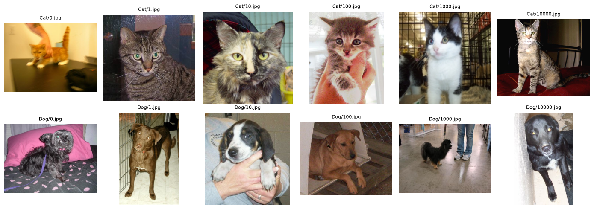
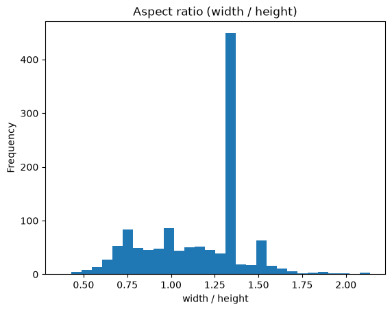

This is the first of three notebooks in a compact transfer-learning case study on the Dogs vs. Cats photograph dataset. Before training anything, it is worth establishing what the data actually looks like, not as a ritual but because several specific properties of this dataset directly determine choices made in the next notebook.
Unlike MNIST, where every image is a centered 28x28 grayscale digit, these are roughly 25,000 real photographs scraped from the web. They vary in resolution, aspect ratio, subject scale, lighting, and how much of the frame the animal actually occupies. That variation is the whole reason a pretrained backbone is the right tool here.
The archive ships as one folder per class with no train/test division of its own, so this notebook is responsible for carving out every split the project uses.
We will:
Confirm the class balance rather than trusting the dataset description.
Check that every file is actually a decodable image, because several are not what their extension claims.
Look at raw images from both classes, to see the range of poses and framing we are asking a model to handle.
Survey image dimensions and aspect ratios, which motivates the resize/crop strategy in the augmentation pipeline.
Produce a stratified train/validation/test split, saved to disk so the later notebooks provably share the same partition.
Imports
Code
from collections import Counterfrom pathlib import Pathimport matplotlib.pyplot as pltimport pandas as pdfrom PIL import Imagefrom catsdogs.dataset import class_balance, filter_loadable, list_image_paths, stratified_splitDATA_DIR = Path("../data/raw/PetImages")PROCESSED_DIR = Path("../data/processed")PROCESSED_DIR.mkdir(parents=True, exist_ok=True)
Class balance
The images arrive in two folders, Cat/ and Dog/, with filenames that are bare numbers restarting from zero in each folder. The label therefore lives in the directory name and nowhere else, which is why catsdogs.dataset derives it from the parent directory rather than parsing the filename.
The dataset is advertised as an even 12,500 per class. It costs one cell to verify that, and the answer matters: a balanced dataset means plain accuracy is a defensible headline metric, and it means a stratified split is a cheap safeguard rather than a necessity.
This section exists because this particular archive has a reputation for containing a couple of unreadable files, and a single corrupt image is enough to kill a DataLoader worker several minutes into an epoch. It is far cheaper to decode everything once now than to debug that later.
Two things are worth separating here. The first is whether a file decodes at all. The second is what format it actually is, which turns out not to match the .jpg extension for a noticeable minority of the files.
Code
formats = Counter()for path in paths:with Image.open(path) as image: formats[image.format] +=1print("actual formats, regardless of the .jpg extension:")for name, count in formats.most_common():print(f" {name:5s}{count:6d}")loadable, rejected = filter_loadable(paths)print(f"\n{len(rejected)} of {len(paths)} files failed to decode")for path in rejected:print(f" {path}")
actual formats, regardless of the .jpg extension:
JPEG 24737
BMP 172
GIF 46
PNG 4
0 of 24959 files failed to decode
Two findings, one benign and one that would have been a real trap.
The benign one is that nothing fails to decode. The two notoriously corrupt files that this archive is known for have already been removed by whoever packaged this copy, which also explains why the per-class counts land slightly under the advertised 12,500. The integrity filter stays in the pipeline anyway, since it costs one pass and removes an entire category of mid-training failure.
The trap is that several hundred files are not JPEGs at all. They are BMP, GIF, and PNG data sitting behind a .jpg extension. This is harmless here only because the pipeline loads images through PIL, which sniffs the actual file header and ignores the extension. A pipeline built on a decoder that trusts the extension, such as torchvision.io.read_image, would fail on exactly these files. It is a good argument for deciding what a file is by opening it rather than by reading its name.
Sample images
A handful of images from each class. The point of this cell is not to confirm that cats look like cats. It is to calibrate expectations about difficulty. Look for how often the animal is partially occluded, off-center, small in frame, photographed alongside a human, or lit badly. Those are the cases the error analysis in notebook 03 will return to.
Code
fig, axes = plt.subplots(2, 6, figsize=(14, 5))for row, class_name inenumerate(["Cat", "Dog"]): examples = [p for p in loadable if p.parent.name == class_name][:6]for col, path inenumerate(examples): axes[row, col].imshow(Image.open(path).convert("RGB")) axes[row, col].set_title(f"{class_name}/{path.name}", fontsize=8) axes[row, col].axis("off")plt.tight_layout()plt.show()

Image dimensions and aspect ratio
This is the survey that actually drives a modeling decision. A pretrained ImageNet backbone expects a fixed 224x224 input, so every image has to be resized, but how depends on the shape of the distribution below.
If aspect ratios cluster tightly near 1.0, a naive resize distorts little and is fine. The wider the spread, the more a plain Resize((224, 224)) squashes subjects, and the more a crop-based strategy is worth preferring. Sampling every 20th image is plenty to characterize the distribution without opening 25,000 files.
Code
sample = loadable[::20] # every 20th image is enough to characterize the distributionsizes = [Image.open(p).size for p in sample]df_sizes = pd.DataFrame(sizes, columns=["width", "height"])(df_sizes["width"] / df_sizes["height"]).plot( kind="hist", bins=30, title="Aspect ratio (width / height)")plt.xlabel("width / height")plt.show()df_sizes.describe()

width
height
count
1248.000000
1248.000000
mean
402.625801
359.828526
std
108.960909
96.767329
min
78.000000
70.000000
25%
320.000000
300.000000
50%
448.000000
375.000000
75%
500.000000
417.000000
max
500.000000
500.000000
The takeaway feeds directly into build_transforms in src/catsdogs/dataset.py: training uses RandomResizedCrop, which samples a random 80-100% region and resizes it to 224x224. That doubles as augmentation and as a principled answer to non-square inputs, since it crops rather than squashing. Validation and test use a plain deterministic resize, because evaluation must not be stochastic.
Train/validation/test split
A 70/15/15 stratified split into three sets rather than two.
The distinction between the validation and test sets is the point. Training saves the checkpoint that scores best on the validation set, which means the validation score is chosen as a maximum over every epoch and is therefore optimistically biased. Reporting it as the headline result would be quietly overstating the model. The test set is touched exactly once, in notebook 03, after the model is frozen, so its metrics are an honest estimate of performance on unseen photographs.
This is worth the extra 15% precisely because the data is cheap and plentiful here. Holding out roughly 3,700 images still leaves well over 17,000 to train on, which is ample for fine-tuning a backbone whose features are already trained.
Stratification matters less on a balanced dataset than it would on a skewed one, but it is nearly free and it removes sampling noise as an explanation for any class asymmetry we see in the confusion matrix later.
The splits are written to data/processed/ rather than recomputed per notebook. Both later notebooks read these CSVs, so the model is never evaluated on an image it trained on. That is a guarantee a shared random seed alone does not give you, since it silently breaks the moment someone changes a split parameter in one notebook and not the other.
Code
splits = stratified_split(loadable, val_fraction=0.15, test_fraction=0.15, seed=0)for name, (split_paths, split_labels) in splits.items():print(f"{name:5s}{len(split_paths):6d} images, balance: {class_balance(split_paths)}") pd.DataFrame( {"path": [str(p) for p in split_paths], "label": split_labels} ).to_csv(PROCESSED_DIR /f"{name}_split.csv", index=False)
Three properties of this dataset shape everything that follows.
It is balanced, so accuracy is a meaningful headline number and the confusion matrix should be roughly symmetric if the model is behaving.
It is visually heterogeneous (varied resolution, framing, and occlusion), which is exactly the regime where fine-tuning pretrained ImageNet features beats training a small CNN from scratch, since low-level edge and texture detectors transfer directly and do not need to be relearned from 17,000 photographs.
And it is not as clean as it looks: file extensions do not reliably describe file contents, which is a reminder that the integrity pass belongs in the pipeline rather than in a one-off script.
Notebook 02 fine-tunes a pretrained ResNet18 on the training split produced above, selecting its checkpoint against the validation split.